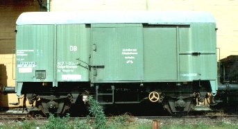
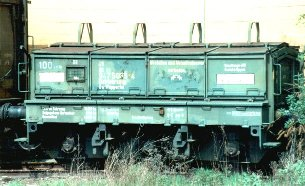
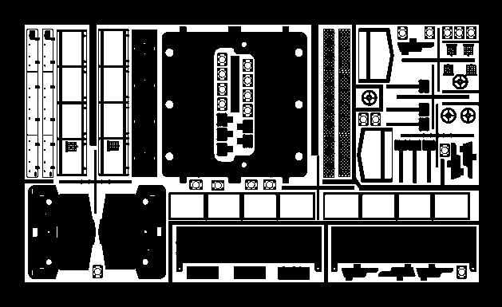
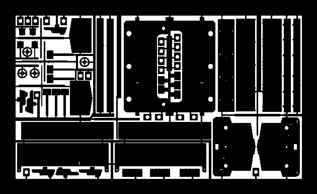
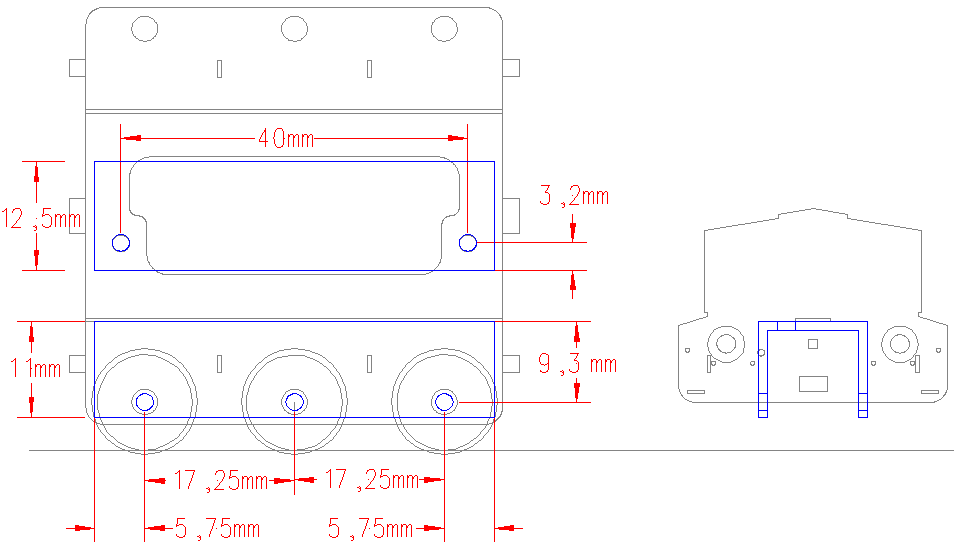
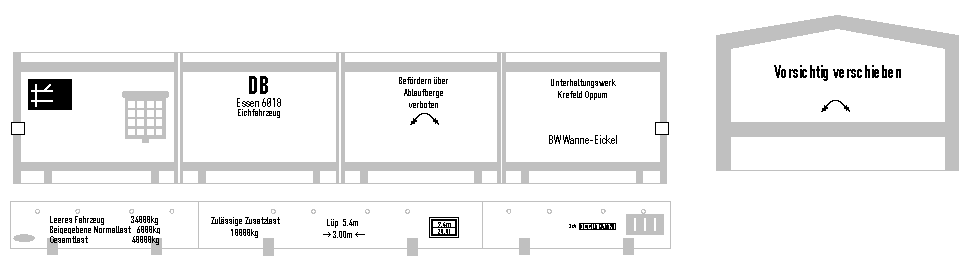

Krümelbahn
Krümelbahn Eichzug
Eichzug
 Eichgerätewagen752
Eichgerätewagen752
Eichgerätewagen752Eichgerätewagen752 (40 80 947 5 034-1) im Bw Wuppertal-Steinbeck [3-5-97]
Eichfahrzeug761
Eichfahrzeug761 (40 80 947 5 075-4) im Bw Wuppertal-Steinbeck [3-5-97]

Allgemeine Informationen
Eichfahrzeuge dienen bei der DB zum Überprüfen bahneigener Gleiswaagen.Ein "Eichzug" besteht immer aus:
- einem oder mehreren Eichwagen
- und einem Gerätewagen.

;){kind=link}
;){kind=link}
Technische Daten
Eichgerätewagen 753| Maße in H0 | ||
|---|---|---|
| Dienstmasse | 40t | |
| Spurweite | 1435mm | 16,5mm |
| Achsanordnung | 2 | |
| Länge über Puffer | 10540mm | 121,1mm |
| max. Geschwindigkeit | 100km/h | |
| gebaute Stückzahl | 55, alle AW Krefeld | |
| Besonderheiten | nur zugelassen auf Streckenklassen C3 und höher | |
Eichfahrzeug 762
| Maße in H0 | ||
|---|---|---|
| Dienstmasse | leeres Fahrzeug 39,9t; zul. Zusatzlast 20t | |
| Spurweite | 1435mm | 16,5mm |
| Achsanordnung | 3 | |
| Länge über Puffer | 5400mm | 62mm |
| max. Geschwindigkeit | 100km/h | |
| gebaute Stückzahl | 54, alle AW Krefeld | |
| Besonderheiten | nur zugelassen auf Streckenklassen C3 und höher | |
Literaturhinweise
Ein ausführlicher Bericht ist zu finden in:- Eisenbahn-Magazin 11/05 (Seite 33 bis 38): Die schweren Jungs - Eichfahrzeuge für Gleiswaagen Teil 1
- Eisenbahn-Magazin 12/05 (Seite 30 bis 32): Schwergewichtler auf Messfahrt - Eichfahrzeuge für Gleiswaagen Teil 2
- Eisenbahn-Kurier 02/06 (Seite 54 bis 57): Eichwagen, um Waagen zu eichen
- ALBA-Verkehrsgeschichte: Das Bahnbetriebswerk zur Dampflokzeit
- Eisenbahn-Magazin 9/87 (Seite 96 und 97): Oldtimer-Waage - Ein Wägehäuschen entsteht im Selbstbau
- Bahn & Modell 4/88 (Seite 34 und 35): Gleiswaage und Wiegehäuschen in H0
- HP1 3/89 (Seite 16 und 17): Gleiswaagen
- HP1 4/89 (Seite 14 bis 17): Gleiswaage im Eigenbau
- Miba-Report Dienstfahrzeuge 1 (Seite 52ff.): Prüfwagen für vielfältige Aufgaben
- HP1 32 (Seite 110 bis 122): Die Gleiswaage zu Fichtenberg
- Eisenbahn-Magazin 12/05 (Seite 78 bis 81): An der Gleiswaage - Eich- und Eichgerätefahrzeuge im Modell
- Eisenbahn-Kurier 06/06 (Seite 102 bis 104): Schwere Jungs - Ein Eichzug als H0-Modell
| Links |
|
|---|
Industriemodelle/Bausätze/Zurüstteile/Beschriftungen
| Hersteller | Epoche | H0 | TT | N | Bemerkungen |
|---|---|---|---|---|---|
| Märklin | IV | 48690 (F) | Gerätewagen mit zwei Eichwagen | ||
| V | 48691 (F) | Gerätewagen der RAG mit zwei Eichwagen | |||
| Krüger-Modellbau | III IV |
HO 73007.01 (B) HO 73007.01 (B) |
Eichgerätewagen 752 Esn, Hmb, Kar, Ksl, Nbg, Stg Stg, Ksl |
||
| HO 73007.13 (B) | Inneneinrichtung für Eichgerätewagen | ||||
III IV |
HO 73006.11 HO 73006.12 |
Komplett-Beschriftungssatz für Eichfahrzeug Esn, Hmb, Kar, Ksl, Nbg, Stg Stg, Ksl |
|||
| IV | HO 73006.13 | stirnseitige Beschriftung Eichfahrzeug | |||
| HO 73007.14 | Beschriftung für Eichgewichte | ||||
| HO 73006.15 (Z) | Füllstücke für 3achs. Eichfahrzeug | ||||
| HO 73006.16 (Z) | Langträgerverstärkung für Eichfahrzeuge |
Bauteilliste
Basisfahrzeuge für einen Selbstbau:- Eichfahrzeug: kompletter Selbstbau aus Messing
- Eichgerätewagen: gedeckter Güterwagen, z.B. Gs213 (Roco 47342)
| Stückzahl | Benennung | Best.Nr. | Techn.Daten | Hinweis |
|---|---|---|---|---|
| 1 | Gehäuse-ÄtzplatteVorderseiteRückseite |
167*102*0,3mm | ||
| 2 je Wagen | Puffer | Weinert 8614 | (4er Pack) | |
| 2 je Wagen | Hakenkupplung | Weinert 8648 | (2er Pack) | nicht bei Anbau einer Fahrzeugkupplung |
| 2 je Wagen | Bremsschläuche, glatt | Weinert 8290 | (4er Pack) | nicht bei Anbau einer Fahrzeugkupplung |
| 4 je Wagen | Signalscheibenhalter | Weinert 8261 | (20er Pack) | |
| Farbe RAL 6020 | Weinert 2629 | 20ml | ||
| Messingdraht | Ø 0,4mm | Griffstangen für Eichwagen | ||
| Messingprofil | U: 2*1mm | |||
| Messingprofil | Rundstab, massiv: 1,5mm | |||
| 1 | Fahrwerksblock | gemäß Skizze oder als 3D-Druck |
Eichwagen | |
| 2 | Schraube mit Mutter | M2 | Fahrwerkbefestigung Eichwagen | |
| 3 | Radsatz | Roco 40264 | RP25 | Eichwagen |
;){kind=link}
;){kind=link}
;){kind=link}

Ätzplatte: Oberseite

Ätzplatte: Unterseite

Skizze Fahrwerkblock
Baubeschreibung
Eichfahrzeug Fahrwerk
Fahrwerk;){kind=link}

Fahrwerk
Stirnwand;){kind=link}

Stirnwand
komplettes Fahrzeug.;){kind=link}

komplettes Fahrzeug
Es fehlen noch die Griffe an den Seitenkästen sowie Lackierung, Beschriftung und die Montage der Puffer.
in Betrieb seit: 08.2009
Lackierung
| Farbe | Best.Nr. | Techn.Daten |
|---|---|---|
| Grundierung | Weinert 2698 | |
| Fahrgestell | Weinert 2646 | RAL 9005, schwarz |
| Gehäuse | Weinert 2629 | RAL 6020, chromoxidgrün |
| komplettes Gehäuse | Weinert 2697 | Klarlack |
Zuerst wird das Gehäuse chromoxidgrün lackiert, anschließend das Fahrgestell schwarz.
Abschließend wird die
BeschriftungBeschriftung;){kind=link}

(HO 73006.13 , Krüger-Modellbau) angebracht.
Zum Schutz der Schriften sollten diese anschließend mit mattem Klarlack lackiert werden.
Eichgerätewagen
Der Artikel im Eisenbahn-Magazin (siehe oben) enthält eine gute Anleitung zum Fahrzeugumbau. Der Beschreibung ist an dieser Stelle (z.Zt.) nichts hinzuzufügen.
(zusätzliche) Eichgewichte
Im Eichgerätewagen werden u.a. Eichnormale mit einem Gewicht von 2,5t mitgeführt. Diese sind als Stahlrolle ausgebildet und können im Modell leicht aus Rundmaterial selbst gedreht werden.
Das
Eichgewicht Eichgewicht;){kind=link}

wird grau (z.B. RAL 7011, eisengrau, Weinert 2633) lackiert.
Eine Beschriftung kann mit "HO 73007.14 Beschriftung für Eichgewichte" von Krüger-Modellbau erfolgen, die Fixierung erfolgt wie gewohnt mit mattem Klarlack.